기능
고객 PC 지원부터 무인기기 관리까지
상담원은 웹 브라우저 하나로 고객을 지원하고, 등록한 기기에는 언제든 접속합니다.
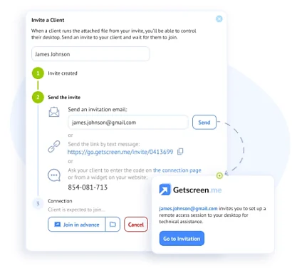
빠른 지원
초대 하나로 고객과 연결
상담원은 관리 패널에서 고객 초대를 만들어 보냅니다. 고객은 초대 링크나 코드로 접속하고, 안내에 따라 접속용 파일을 실행하면 연결됩니다. 원격 기기 접근은 초대를 통해서만 허용됩니다.
초대를 보내는 다섯 가지 방법
- 안내가 담긴 이메일을 고객에게 보내기
- 초대 페이지 링크 공유하기
- 연결 페이지에서 코드로 접속하게 하기
- 우리 웹사이트에 단 위젯에서 코드로 연결하기
- 에이전트 앱이 만든 고유 링크로 장치 공유하기
원격 제어 패널
마우스와 키보드 제어 외에, 원격 지원에 필요한 도구를 패널 하나에 모았습니다.
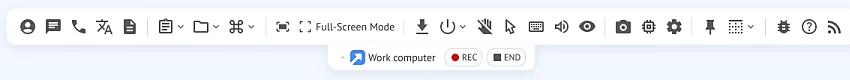
- 채팅·음성 통화연결 중에 텍스트 채팅이나 음성 통화로 고객과 이야기합니다.
- 파일 주고받기파일 관리자로 원격 기기와 내 PC 사이에 파일을 양방향으로 보냅니다.
- 녹화·스크린샷·메모세션 화면을 녹화하거나 캡처하고, 나중에 참고할 메모를 세션마다 남깁니다.
- 재부팅 후 자동 재연결원격 기기를 재부팅해도 별도 조치 없이 세션이 다시 연결됩니다.
- 다중 모니터여러 모니터를 오가며 보고, 필요에 맞게 화면 배치를 바꿉니다.
- 클립보드·단축키클립보드를 관리하고 단축키 조합으로 원격 데스크톱의 기능을 빠르게 엽니다.
- 키보드 동기화켜 두면 해외 고객 PC에도 키 코드가 아닌 문자가 그대로 전송됩니다.
- OS 텍스트 자동 번역원격 컴퓨터 OS의 메뉴와 안내 문구를 실시간으로 번역해 보여 줍니다.
- 시스템 정보 확인연결된 원격 컴퓨터의 장치 구성 정보를 바로 확인합니다.
- 지원 기록 관리세션마다 지원 내역을 기록·보관해 어느 고객사의 어떤 장비를 지원했는지 파악합니다.
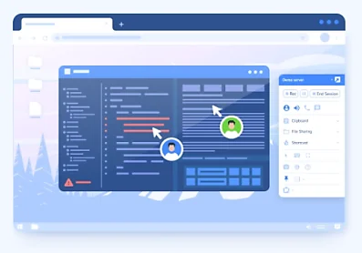
여러 상담원이 한 세션에
여러 상담원이 하나의 원격 지원 세션에 동시에 참여해, 전문 지식을 나누며 실시간으로 함께 문제를 풉니다.
- 하나의 세션에 여러 상담원이 동시 참여
- 등록된 상담원과 익명 참여자 1명에게 동시 접속 권한
- 빠른 지원 초대장 접근 권한을 다른 상담원에게 부여
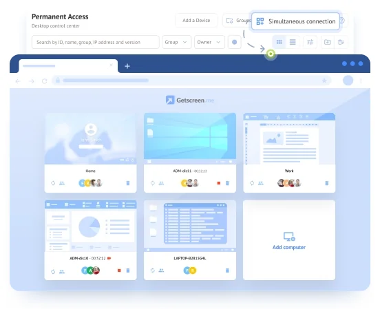
상시 원격 접속
무인기기 상시접속, 무제한 동시 연결
기기 관리자가 없어도 키오스크, 디지털 사이니지, POS 같은 무인 기기에 원격으로 접속합니다. 비업무 시간에 유지보수, 패치, 업데이트를 미리 하고, 장애가 생기면 바로 접속해 원인을 확인합니다.
- 관리 패널에서 여러 기기에 동시에 연결하고 쉽게 전환
- 기기에 에이전트를 설치하고 관리 계정에 등록
- 장치 등록 수량은 구매한 라이선스에 따름 (상담원 요금과 별도)
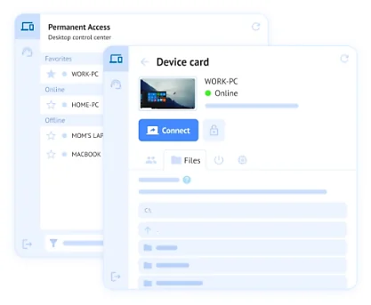
설치형 대시보드
관리 패널 기능을 그대로 담은 데스크톱 앱입니다. 기기와 고객 목록을 별도 창에서 열고, 브라우저와 따로 원격 컴퓨터를 관리합니다. 브라우저 대신 고를 수 있는 선택 사항입니다.
- Win, Alt+Tab, Ctrl+Shift+Esc 같은 시스템 키 조합 동기화
- 브라우저와 상관없이 늘 켜 둘 수 있는 트레이 앱
- 고객이 빠른 지원을 받을 준비가 되면 푸시 알림
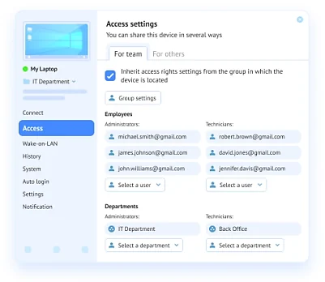
공유 액세스와 접근 권한
관리 패널에 등록된 기기마다 누가 접속할 수 있는지 정합니다. 업무에 필요한 기기는 팀원과 공유하고, 개인정보 보호와 보안을 위해 접근을 막을 수도 있습니다.
- 팀, 그룹, 사용자 단위로 기기 공유
- 특정 직원에게만 개별 접근 권한 지정
- 다른 신뢰할 수 있는 계정과 접속 세션 공유
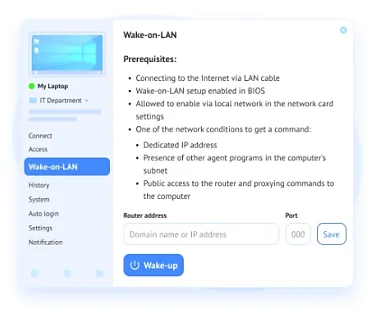
Wake-on-LAN
전원은 꺼졌지만 전원에 연결된 저전력 상태의 컴퓨터를 원격으로 깨웁니다. 자리에 사람이 없어도 됩니다.
- BIOS와 네트워크 카드 설정에서 Wake-on-LAN 활성화 필요
- 상담원 관리 패널 > 상시 원격 접속에서 깨울 컴퓨터 선택
- 기기 지원 여부와 네트워크 조건은 미리 확인
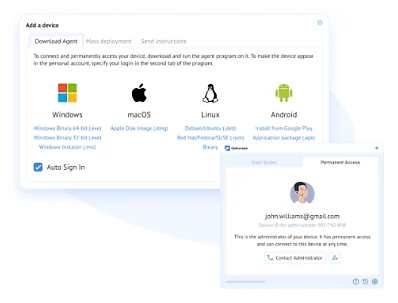
지원 운영체제
데스크톱과 서버, 안드로이드 기기까지 원격으로 제어하고 관리합니다.
- Windows
- 7 이상
- Windows Server
- 2008 R2 이상
- macOS
- 10.12 이상
- 리눅스
- 모든 버전
- 안드로이드
- 7.0 이상
공식 소개에는 iOS 지원도 안내되어 있습니다. iOS에서 쓸 수 있는 기능 범위는 자료를 받으면 채울 자리입니다.
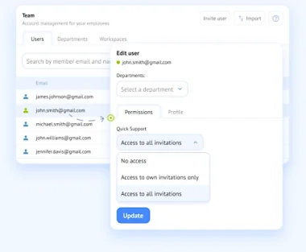
팀·보안
상담원 계정과 권한
상담원마다 계정을 만들어 활동을 관리하고 추적합니다. 그룹과 사용자별로 접근 권한을 나눕니다.
- 상담원별 계정으로 활동 관리·추적
- 그룹·사용자별 접근 권한
- 빠른 지원 초대장 접근 권한: 없음 · 내 초대만 · 전체
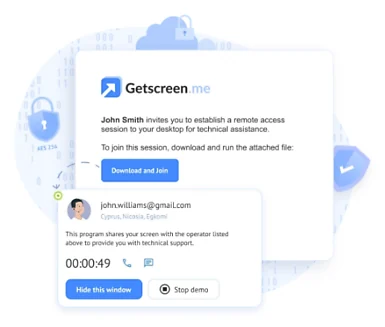
원격 세션 보안
종단 간 암호화로 민감한 정보를 보호하고, 권한이 있는 사람만 원격 세션에 들어오게 합니다.
- 128비트 AES 암호화WebRTC와 SSL 프로토콜 안에서 128비트 AES로 암호화해, 전송·저장 중인 데이터를 보호합니다.
- 샌드박스에서 도는 에이전트연결 에이전트는 일반 프로그램 목록에 나타나지 않는 샌드박스 환경에서 실행됩니다.
- 브라우저 기반 연결상담원은 브라우저로 연결하므로, 상담원 컴퓨터가 역방향 접근으로부터 보호됩니다.
- 방화벽 설정 변경 없이포트를 열거나 예외를 추가하지 않고 기존 방화벽 설정 그대로 작동합니다.
- VirusTotal 검증·자동 업데이트소프트웨어 버전마다 VirusTotal에서 검증하고, 업데이트는 자동으로 제공됩니다.
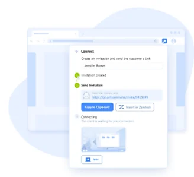
연동·브랜딩
플러그인과 통합
공식 Chrome 확장 프로그램을 설치하면 관리 페이지로 가지 않고도 브라우저 어느 페이지에서나 고객 초대장을 만들어 보냅니다. 업무 앱 연동과 HTTP API로 지원 흐름을 이어 붙일 수도 있습니다.
- Chrome 확장 프로그램
- 어플리케이션 연동
- HTTP API
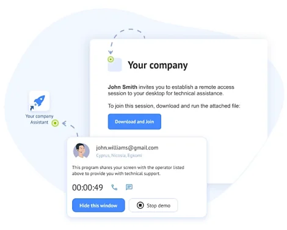
우리 회사 이름으로 브랜딩
초대장과 상담원 파일에 회사 로고와 이름을 넣어 고객의 신뢰를 높입니다.
- 제목: 프로그램 창, 트레이 메뉴, 바로 가기 등에 최대 30자로 표시
- 아이콘: 내려받는 파일, 작업 표시줄 트레이, 브라우저 파비콘
- 하위 도메인: 3~25자 라틴 문자로 만드는 고정 연결 링크
- 개인 도메인(CNAME): 우리 회사 도메인을 연결 주소로 사용
지금 쓰는 원격지원, 비용부터 비교해 보세요
상담원 수와 원격 대상(고객 PC, 무인기기)을 알려 주시면 맞는 구성을 안내해 드립니다.